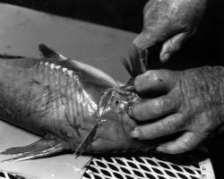

Michael Heffernan
Augury
I try to make this out through the
brain-fog,
but I’ve lost connecting tissue. My molecules
are not in tune. A cry so tunable
was never halloa’d to.
Shakespeare could strike
a note like that because it came to him
for no good reason. Something about dogs
making a song together in a pack.
Shakespeare liked dogs. I happen to like birds.
I was looking out my doorway last January,
and the air was suddenly laden with geese.
It had begun to snow, quite heavily.
These geese were in the field across the road
and, taken by surprise, they rose into whiteness,
each under each, honking for
Yucatan.
I knew they knew something I could not find out,
for reasons only reasonable geese
could bring to bear on such reality
as geese alone can see. I wanted to know
how what had happened to them happened to me
at the same time, though in a different way.
If they had needed to find heavenly food
to bring with them above, they’d found it here
in the place I was. They’d pecked the dirt
until it looked all white. Then they took off
with bits of it stuck to their beaks and tail-feathers
to teach me what I otherwise might not know
till a hundred wings come scribbling into the sky
words which the sky erases. These were your words.
They spotted the air with silver ornaments
flickering and disappearing into space
that once was song and color. Entering it,
I tried to answer you with my own sound,
which I released from birds shaking the snow
dreadfully off their wings in search of air
and smoothness and new earth to poke around.
|

(photo by Brandy Rhodes) |
{kind=link}